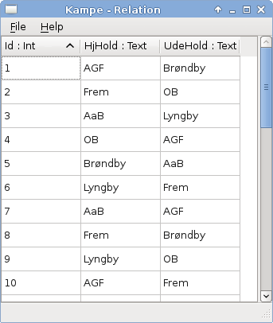

The purpose of the Rasmus interpreter is to evaluate expressions typed by the user. This chapter describes the Rasmus interpreter.
To start Rasmus execute the rasmus file. This opens a graphical user interface (GUI) window similar to the one shown in figure 1.
In the following we describe how to evaluate Rasmus expressions in the interpreter. Next we walk through the features that are available in the GUI.
On the left side of the main window there is a Read-Eval-Print-Loop (REPL) interpreter where Rasmus expressions can be typed and evaluated. The left side will be refered to as the interpreter. On the right side we see a list of names and values. The names are the variables that currently exist in the global scope and the values are the corresponding values. If a variable’s value is Relation then it is possible to inspect that relation by double clicking the variable name. This will pop up a new window similar to the one in figure 2.
Insepecting the relation Kampe. Note that the relation cannot be modified here, that is only possible through interaction with the Rasmus interpreter. It is however possible to sort the tuples by clicking on the header. Note that it is a stable sort, so you can sort the tuples breaking ties properly.
Figure 2: Inspecting the relation Kampe
Typing in expressions in the interpreter and pressing return makes the interpreter evaluate the expression. Suppose you have typed in the following expression:
Your Rasmus window will now look as in figure 3. Note that due to the last “+” on the first line the interpreter was still waiting for input. Had the “+” been omitted the first line would have been evaluated before the second line could be typed in the interpreter. Furthermore, observe that a new name appeared in the environment list on the right. This happened because a new variable, x, has been defined.
If you type an illegal expression, the Rasmus interpreter will do its best to diagnose the error and provide a useful error message, such that you can correct the error. What constitutes a legal expression is further described in Chapter 4.
To close the Rasmus system go to File and Quit.
Often we want to produce more complicated pieces of code rather than simple expressions. To accomodate this the Rasmus system contains a development environment as well. To open a new file in the editor go to File and then click New. This opens an editor where Rasmus code can be written. Note that there is simple syntax highlighting and intellisense (i.e. a red lines appear under invalid expressions). Once you have written your code you can send it to the interpreter by either going to File and click Run, or by using the shortcut Ctrl+R.
The code you type can be saved in Rasmus code files by using File, Save. As a side note, Rasmus code files have the extension “.rm” . If you want to load previously written Rasmus code files you have to use the File menu in the main window followed by clicking Open and locating the file on your system.
It is possible to do some configuration of your Rasmus system, such as changing font types and colors. Going to Edit and Preferences opens a dialog where you can change these visual features. An important setting is the Environment Path. This is the directory where all relations are stored and also where they are automatically loaded from when Rasmus is started. It is recommended that you use the Environment Path as workspace but you remember to export relations to other places as well. Further information on how relations are stored and retrieved can be found in section 3.
In the Help menu you can find a tutorial on Rasmus and the Rasmus manual (this document).